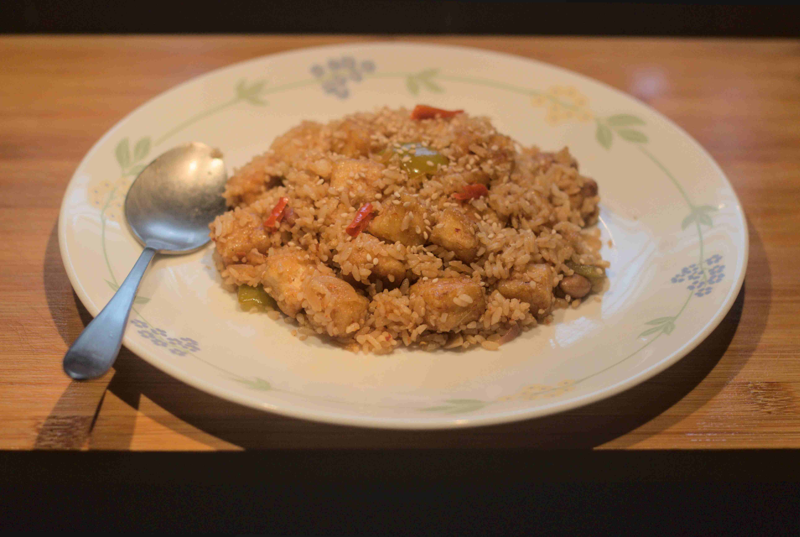

Tofu Fried Rice

Steaming plate of Tofu Fried Rice, garnished with toasted sesame seeds and
peanuts
This simple recipe is wonderfully easy to cook, and super tasty.
Although this isn't a recipe I developed with my sister during the pandemic, it
is a recipe I used merely hours ago to cook dinner for myself, and hence the freshest in my mind right now.
Ingredients
- Sesame seeds
- peanuts
- Tofu
- Cooked white rice
- veggies (cauliflower, carrots, peas, etc.)
- Soy sauce
- Red chilli sauce
- Green chilli sauce
- Vinegar
- Honey
- Corn starch
- Garlic powder
- 1 onion
- Salt
- MSG
Steps
- In a dry pan, toast sesame seeds and peanuts together for 5 minutes,
stirring occassionally.
- While the seeds are toasting, cut your tofu up into small cubes, and coat them
completely with corn starch.
- Remove the seeds and peanuts from the pan and wipe the pan with a paper
towel.
- Place the pan back on the flame, and add a tablespoon of oil.
- Once the oil is sufficiently heated, toss the fully-coated tofu into the pan and
fry until golden brown and
cripsy to the touch.
- While the tofu is frying, Finely chop up one half of a medium sized onion,
and cut the other half into larger pieces.
- Chop up a couple of green chillies, and other veggies as per your taste
- Heat up a tablespoon of oil on a pan, and add your aromatics (garlic, chillies,
ginger, etc.) starting with the finely chopped onion.
- In a small bowl, add two table spoons of soy sauce, one tablespoon of
vinegar, one teaspoon of honey, one tablespoon of red chilli sauce, one
tablespoon of green chilli sauce, a pinch of MSG, a teaspoon of garlic
powder, and the left-over corn starch from coating the tofu and mix well. If not
much is
left, add some fresh corn starch to the mix.
- Remove the tofu from the pan, and wipe it clean. Add a tablespoon of oil and
heat it
- Add the finely chopped onion in the pan, and then add the aromatics (ginger,
garlic, chillies, etc.)
- Add the remaining veggies and the other half of the onion, and fry well.
- Once sufficiently cooked, add the soy sauce mixture straight from the bowl into
the pan, and heat well. If the liquid seems insufficient, add a little water.
- Add the fried tofu into the pan, and cook well.
- Add the cookced white rice and mix well.
- Add salt and MSG to your taste.
Your Tofu-fried rice is done! Enjoy with a nice episode of some pirated TV series
on your TV.
Home